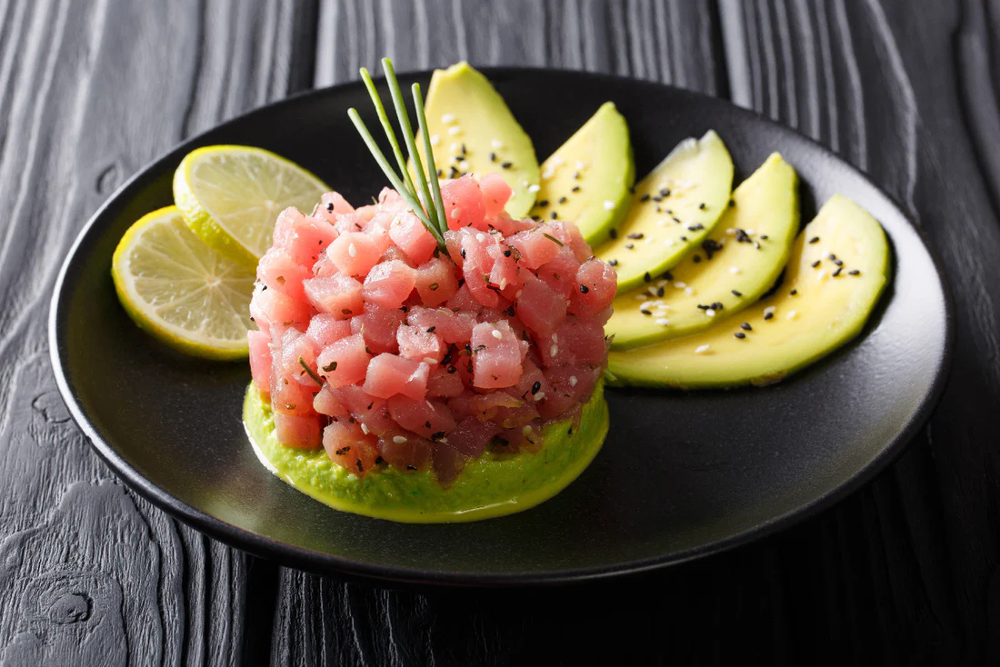
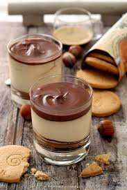

Signature Dishes
Piatti pensati per un’esperienza gourmet da paddock VIP.






Un viaggio gastronomico raffinato, creato da chef di fama internazionale per accompagnare la tua esperienza in Formula 1.
Scopri il MenùPiatti pensati per un’esperienza gourmet da paddock VIP.


Etichette selezionate per accompagnare ogni momento del weekend di gara.
Note di agrumi e mandorla, perfetto per l’aperitivo in lounge.
Fragola, lampone e una chiusura elegante, come un sorpasso pulito.
Corposo, speziato, ideale per i piatti principali gourmet.
Ogni piatto è un momento di regia, non solo di cucina.